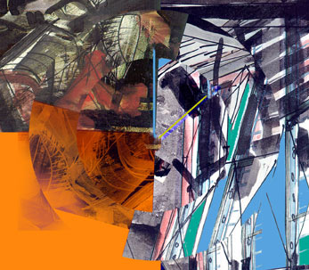

Escogida para el Festival Días Mundiales de la Música
de la Sociedad Internacional de Música Contemporánea, (ISCM),
en Luxemburgo, 2000.
Escogida para el Festival Latinoamericano de Música
pero sólo se pudo tocar la mitad de la primera pieza, por
falta de estudio de los ejecutantes. Concursó en el 2008 para
el Premio Municipal de Música, mención música de cámara, y
ganó el concurso. No obstante, un meimbro del jurado, Diana
Arismendi, le quitó el premio por alegar que "...la pieza
había sido ejecutada anteriormente...", basándose en la media
ejecución de la primera pieza en el Festival
Latinoamericano de Música.
Partitura
ArteMus, Caracas.
Ilustración de la portada: Ivan Estrada, 2007

Tempus
es una serie de cuatro estudios para violín y violonchelo, y se
pueden tocar en conjunto o separadamente. Es la primera pieza
del autor con instrumentos sinfónicos, realizada dentro de la
clase de composición de Yannis Ioannidis en la Escuela de Música
Juan Manuel Olivares, Caracas.
Cada estudio se enfoca en dificultades técnicas específicas de
la ejecución de los instrumentos, así como de la interpretación
conjunta en dúo, y dificultades temporales. Como toda música
técnicamente exigente, Tempus necesita ensayo, tiempo y trabajo
de ensamble para poder ejecutarla bien. Su macro-forma maneja
estructuras geométricas en su mayoría simétricas, las cuales son
adaptadas a la presentación musical con recursos discursivos
inherentes a la percepción musical. Su estilo es disonante pero
rítmicamente preciso, siendo ésta la característica principal
como estudio musical y la base para su nombre en alusión al
tiempo, elemento fundamental de la música.